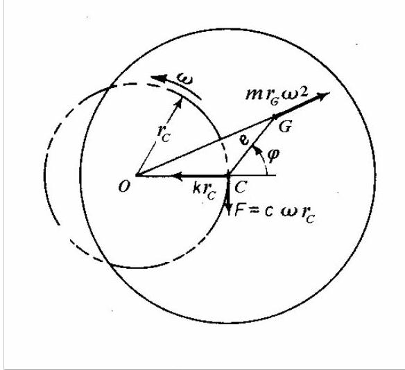
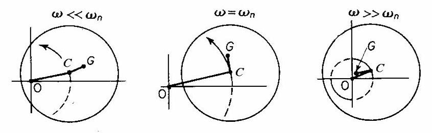
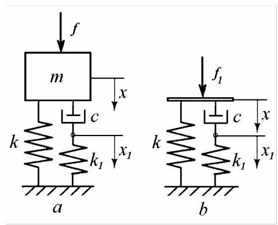
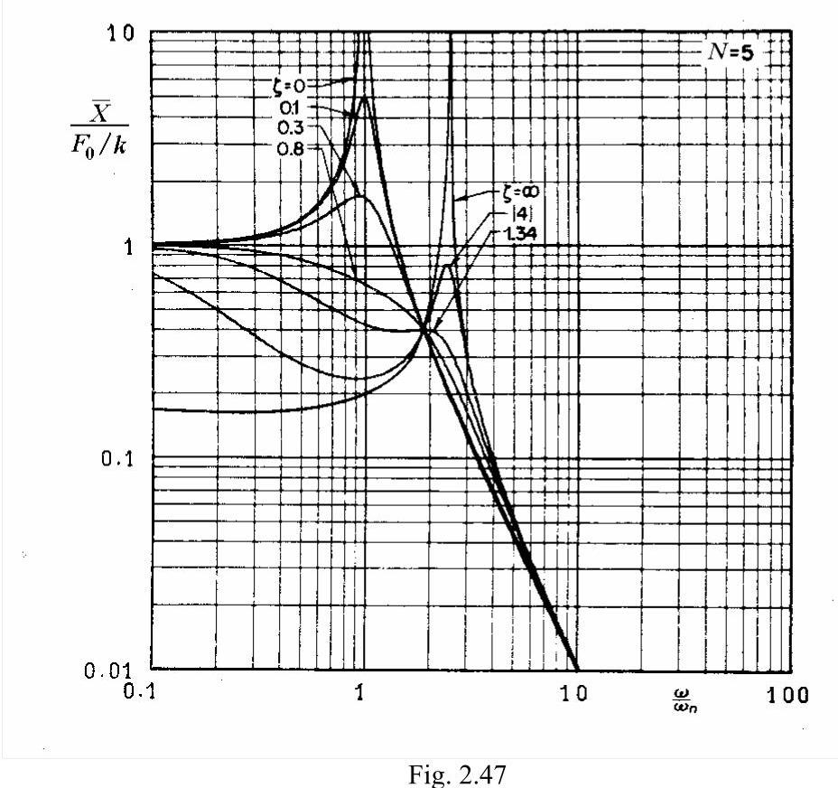
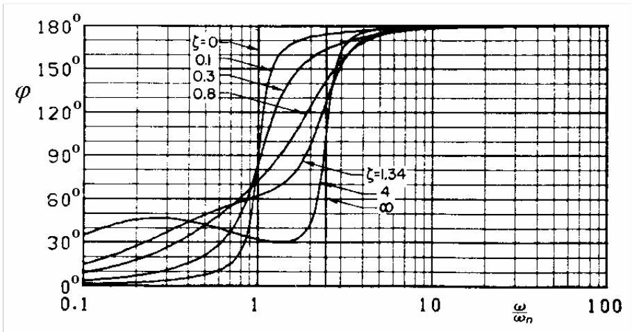
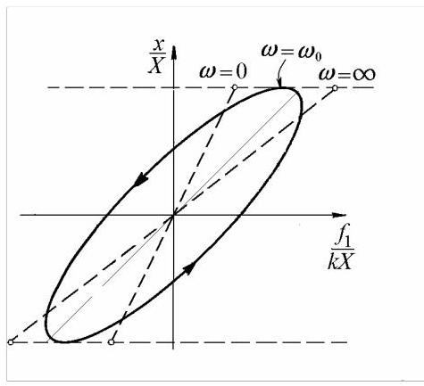

2.4.11 带外部阻尼的旋转轴
考虑图2.18中的转子，在相对于静止环境运动产生的摩擦力作用下。在同步进动中，点\(C\)和\(G\)以角速度\(\omega\)绕轴承轴线\(O\)旋转，该角速度与轴绕\(C\)的转速相同。阻尼力\({f}_{d}\)可假设与切向速度\({r}_{C}\omega\)成正比，即\({f}_{d} = - c{r}_{C}\omega\)，其中\(c\)为外部粘性阻尼系数。
圆盘的受力分析如图2.44所示。由轴弯曲\(k{r}_{C}\)引起的弹性恢复力沿\({OC}\)作用。由偏心\({CG} = e\)引起的离心力\(m{\omega }^{2}{r}_{G}\)沿\({OG}\)作用。粘性阻尼力垂直于\({OC}\)。点\(O, C\)和\(G\)不再共线，直线\({CG}\)超前直线\({OC}\)角度\(\varphi\)。
三力的动态平衡意味着

图2.44
点\(C\)的圆轨道半径为
在临界速度下，当\(\omega = {\omega }_{n}\)时，轨道半径为\({r}_{C} = e/{2\zeta }\)。

图2.45
直线\({CG}\)与直线\({OC}\)之间的夹角由下式给出
该角度\(\varphi\)随速度\(\omega\)增大而增大。当\(\omega < {\omega }_{n}\)(图2.45，a)时，圆盘以\(G\)在\(C\)外旋转。随着速度增加，线段\({OC}\)增大，且\({CG}\)相对于\({OC}\)旋转。当\(\omega = {\omega }_{n}\)时，直线\({CG}\)超前\({OC}\)\({90}^{ \circ }\)。当\(\omega > {\omega }_{n}\)时，圆盘以\(G\)在\(C\)内旋转，且\({OC}\)减小。在极高速度下，点\(G\)与点\(O\)重合，半径\({r}_{C}\)趋近于\(e\)，轴绕其质心旋转。
2.4.12 遗传阻尼(Hereditary Damping)
在简单模型中，粘性阻尼(viscous damping)被视为与弹簧并联的阻尼器(dashpot)(图2.26)。该模型称为Kelvin-Voigt模型，具有直接耦合阻尼。

图2.46
其他简单模型引入了弹性耦合的粘性阻尼机制。在三参数Maxwell模型中，阻尼器与另一弹簧串联(图2.46，a)。该系统具有两个自由度。
运动方程可写为
对于激励\(f = {F}_{0}{e}^{\mathrm{i}{\omega t}}\)，假设解的形式为
其中\(\bar{X}\)和\({\bar{X}}_{1}\)为复振幅。
方程(2.115)变为
并可写为
其中

质量\(m\)的复位移振幅为
位移放大系数
在图2.47中以图形方式给出，对应某一刚度比\(N = 5\)及不同阻尼比取值。相应的相位角示于图2.48。

图2.48
可将表达式(2.121)平方并写成如下形式
方程(2.122)亦可改写为
方程(2.123)所表示的所有曲线均穿过由以下方程曲线构成的交点
可表示为
或
以及
方程(2.124)表示参数\(\zeta = 0\)对应的曲线(2.123)。方程(2.125)表示参数\(\zeta = \infty\)对应的曲线(2.123)。两曲线在频率比\(\beta = \sqrt{\left( {N + 2}\right) /2}\)、纵坐标\(\left| \bar{X}\right| /\left( {{F}_{0}/k}\right) = 2/N\)处相交。所有频率响应曲线均穿过该点。
图2.47表明，阻尼的微小变化可能导致共振频率的显著变化。这与直接耦合粘性阻尼系统(图2.28)完全不同，后者的共振频率随阻尼变化可忽略不计。
共振频率从\(\zeta = 0\)时的\(\beta = 1\)增至\(\zeta = \infty\)时的\(\beta = \sqrt{1 + N}\)。随着阻尼增大，响应峰值先减小后增大，表明存在最优阻尼
使共振响应最小，其值等于各阻尼比对应曲线交点的纵坐标。
当\(N > 2\)时，在\({0.7} < \zeta < {\zeta }_{\text{opt }}\)的阻尼范围内，频率响应曲线中未出现共振。
该行为可通过考虑图2.46所示三参数弹簧-阻尼器模型\(b\)的动态响应来解释，其特性由两个方程描述
由于我们不关心包含内部自由度的“隐藏”坐标\({x}_{1}\)，故由方程(2.127)解出\({x}_{1}\)并代入方程(2.126)，得到
其中
其基本假设为:当\(t = 0\)时，模型处于无应变状态。
在方程(2.128)中，阻尼项依赖于速度的历史，因此称为“遗传阻尼(hereditary damping)”。
当力\({f}_{1}\)作为时间的函数给出时，方程(2.126)和(2.127)的解为
其中
称为模型的“时间常数(time constant)”。
方程(2.130)右侧的第一项描述瞬时响应，这在许多阻尼系统中实际可观察到。
接下来考虑对谐波激励的受迫响应。将复数解(2.116)代入方程(2.126)和(2.127)，然后消去内部坐标，我们得到
其中复刚度(complex stiffness)\(\bar{k}\)为
当方程(2.132)分解为实部和虚部时，可写成与直接耦合粘性阻尼模型相同的形式
其中等效刚度(equivalent stiffness)和等效粘性阻尼系数(equivalent coefficient of viscous damping)分别为
具有遗传阻尼的模型因此可简化为具有频率相关参数的Kelvin-Voigt模型。等效弹簧刚度\({k}_{e}\)随频率从\(k\)增加到渐近值\(k + {k}_{1}\)，而等效粘性阻尼系数\({c}_{e}\)则从\(c\)减小到零。
每周期耗散的能量为
当\(\omega = 0\)和\(\omega = \infty\)时该值为零，在\({\omega }_{0} = {k}_{1}/c\)处达到最大值，此时\({c}_{e} = c/2\)。

图2.49
这也反映在滞回曲线(图2.49)中。在零频率时，我们得到一条直线，对应于刚度为\(k\)的纯弹簧。当\(\omega = {\omega }_{0}\)时，出现面积最大的椭圆。当频率趋于无穷大时，我们得到一条斜率较小的直线，对应于刚度为\(k + {k}_{1}\)的纯弹簧。
Matlab Demo
采用了工程上的phase lag为正的设定，符合大部分示波器设定，与数学定义有区别。
% 清理工作区和命令窗口
clear;
clc;
close all;
%% 1. 定义模型参数
fprintf('--- 遗传阻尼模型参数设置 ---\n');
N = 5; % 刚度比 k1/k, 与图2.47保持一致
beta = linspace(0.01, 10, 1000); % 无量纲频率 w/wn 的范围
% 选择一系列阻尼比 zeta 进行分析, 包含0, 无穷大, 以及最优阻尼
zeta_opt = N / sqrt(2 * (N + 2)); % 理论最优阻尼值
zeta_vals = [0.01, 0.2, 0.7, zeta_opt, 3, 1e10]; % 阻尼比zeta的取值数组
fprintf('刚度比 N = k1/k = %.1f\n', N);
fprintf('理论最优阻尼比 zeta_opt = %.3f\n', zeta_opt);
fprintf('---------------------------------\n\n');
%% 2. 统一计算所有响应并存储
fprintf('正在计算所有频率响应...\n');
% 预分配矩阵以存储结果，提高效率
num_zeta = length(zeta_vals);
num_beta = length(beta);
all_amp_factors = zeros(num_zeta, num_beta);
all_phase_degs = zeros(num_zeta, num_beta);
legend_entries = cell(1, num_zeta);
for i = 1:num_zeta
zeta = zeta_vals(i);
% 计算复数响应
numerator_complex = 1 + 1i * (2 * zeta * beta / N);
denominator_complex = (1 - beta.^2) + 1i * (2 * zeta * beta / N) .* (N + 1 - beta.^2);
if isinf(zeta)
complex_response = 1 ./ ( (N + 1 - beta.^2) );
legend_entries{i} = 'ζ = ∞';
else
complex_response = numerator_complex ./ denominator_complex;
if abs(zeta - 0) < 1e-9
legend_entries{i} = 'ζ = 0';
elseif abs(zeta - zeta_opt) < 1e-4
legend_entries{i} = sprintf('ζ = %.3f (最优)', zeta);
else
legend_entries{i} = sprintf('ζ = %.2f', zeta);
end
end
% 存储幅值和相角
all_amp_factors(i, :) = abs(complex_response);
all_phase_degs(i, :) = rad2deg(angle(complex_response));
end
fprintf('计算完成。\n\n');
%% 3. 绘制图形1: 幅频特性
figure('Name', '幅频特性', 'NumberTitle', 'off', 'Color', 'w', 'Position', [100, 200, 700, 500]);
for i = 1:num_zeta
loglog(beta, all_amp_factors(i, :), 'LineWidth', 1.5, 'DisplayName', legend_entries{i});
hold on;
end
grid on;
% 标记所有曲线的交点
beta_intersect = sqrt((N + 2) / 2);
amp_intersect = 2 / N;
loglog(beta_intersect, amp_intersect, 'ko', 'MarkerFaceColor', 'r', 'MarkerSize', 8, 'HandleVisibility', 'off');
text(beta_intersect, amp_intersect * 1.5, ...
sprintf('交点 (β=%.2f, Amp=%.2f)', beta_intersect, amp_intersect), ...
'HorizontalAlignment', 'center', 'FontSize', 10, 'Color', 'k');
% 设置图形属性
title(sprintf('幅频特性 (N = %d)', N), 'FontSize', 14);
xlabel('频率比, β = ω/ω_n', 'FontSize', 12);
ylabel('|X| / (F_0/k) (对数刻度)', 'FontSize', 12);
legend('show', 'Location', 'northeast');
ylim([0.01, 10]);
xlim([0.1, 100]);
hold off;
%% 4. 绘制图形2: 相频特性
figure('Name', '相频特性', 'NumberTitle', 'off', 'Color', 'w', 'Position', [820, 200, 700, 500]);
for i = 1:num_zeta
% 跳过 zeta = Inf 的曲线
if ~isinf(zeta_vals(i))
semilogx(beta, -all_phase_degs(i, :), 'LineWidth', 1.5, 'DisplayName', legend_entries{i});
hold on;
end
end
grid on;
% 设置图形属性
title(sprintf('相频特性 (N = %d)', N), 'FontSize', 14);
xlabel('频率比, β = ω/ω_n', 'FontSize', 12);
ylabel('相位角 φ (度)', 'FontSize', 12);
legend('show', 'Location', 'southeast');
xlim([0.1, 100]);
ylim([0, 180]);
yticks(-180:45:180);
hold off;